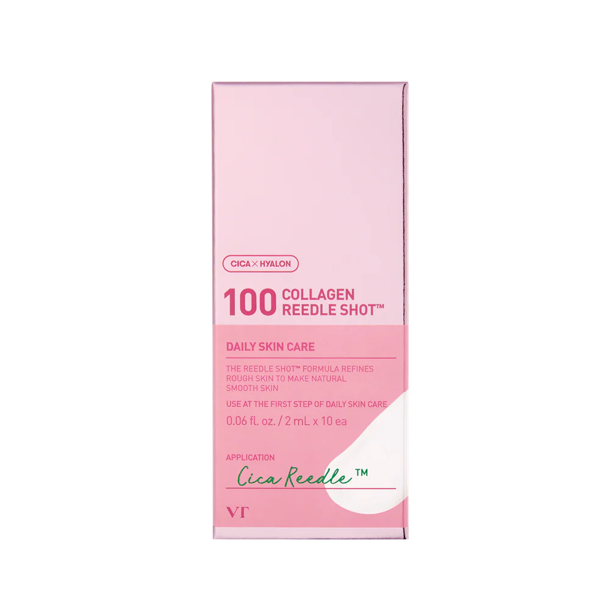
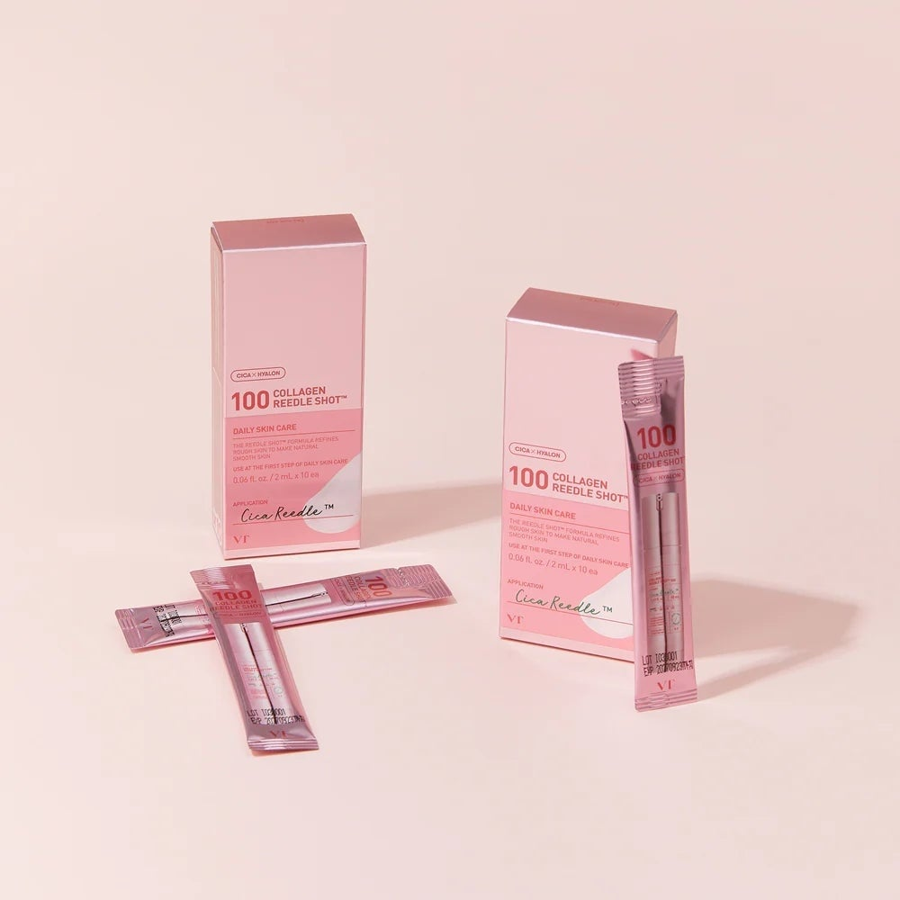
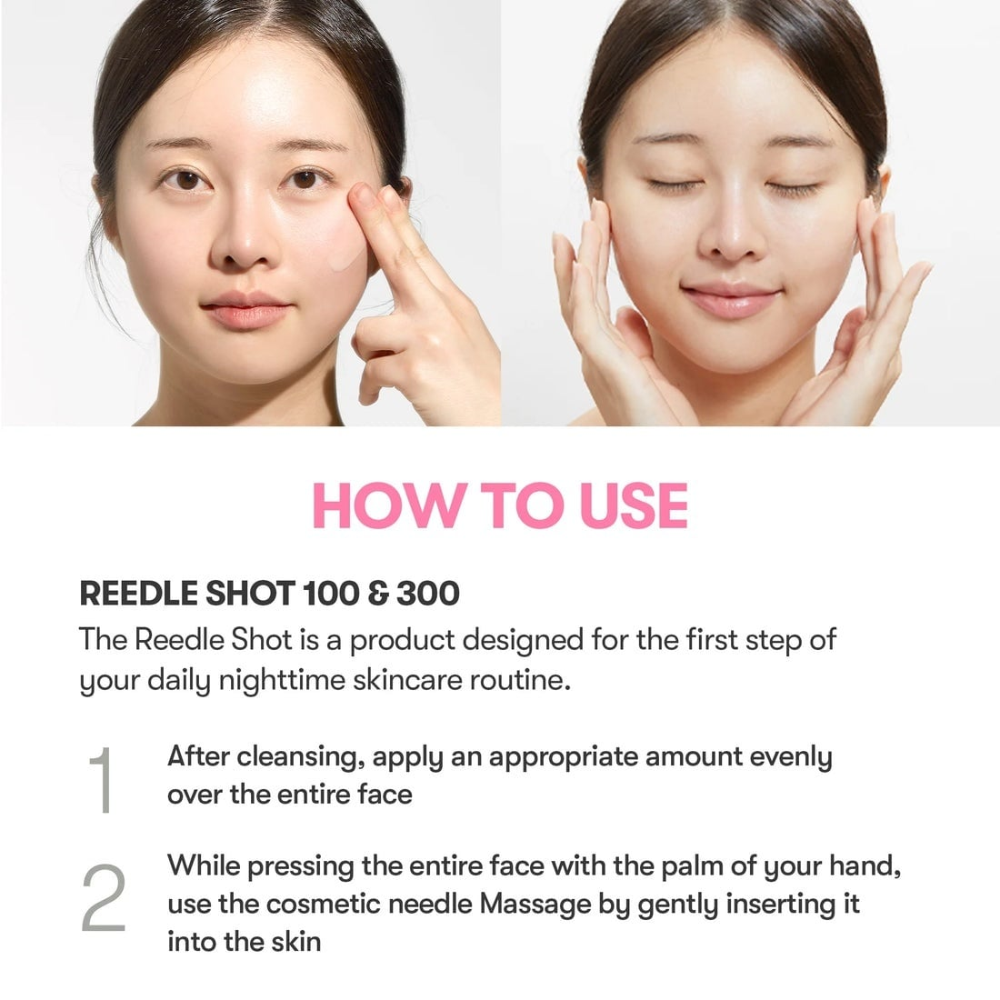
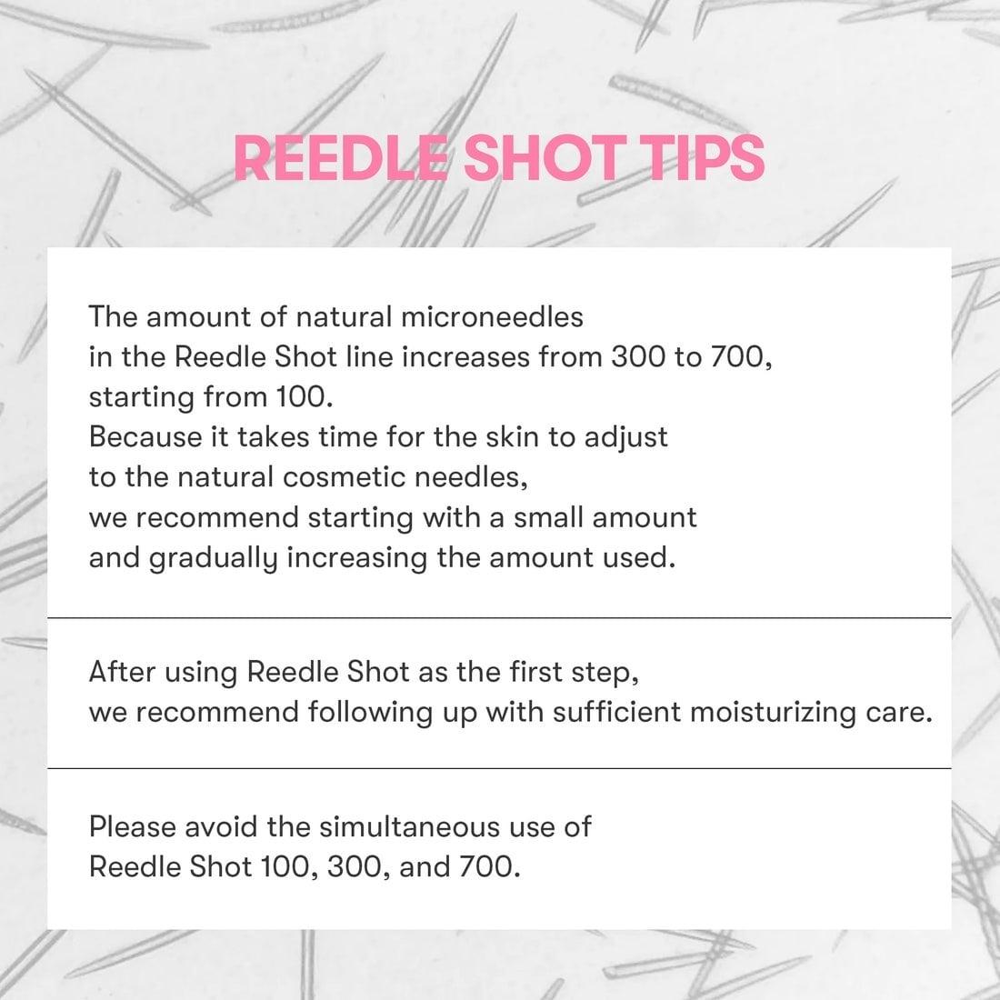
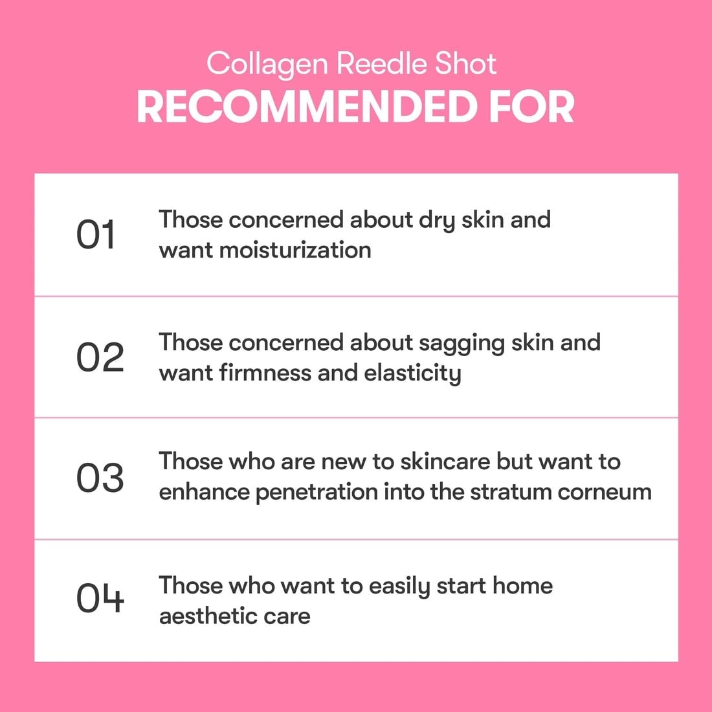

<div> <table style="border-collapse: collapse; width: 99.9809%;" border="1"><colgroup><col style="width: 49.9522%;"><col style="width: 49.9522%;"></colgroup> <tbody> <tr> <td><span style="font-size: 14pt;">VT Cosmetics 100 Collagen Reedle Shot. Cutia roz conține 10 plicuri monodoză a c&acirc;te <span data-math="2\text{ ml}" data-index-in-node="116">2ml</span>, oferind o &icirc;ngrijire zilnică bazată pe tehnologia Cica Reedle și colagen, concepută pentru a uniformiza textura aspră a tenului și a-i reda finețea naturală.</span></td> <td></td> </tr> <tr> <td></td> <td><span style="font-size: 14pt;">Designul compact și formatul porționat fac acest produs extrem de practic pentru călătorii, asigur&acirc;nd o infuzie proaspătă de colagen și micro-ace estetice &icirc;n fiecare seară.</span></td> </tr> <tr> <td><span style="font-size: 14pt;">Utilizarea Reedle Shot 100 și 300, recomandat ca prim pas &icirc;n rutina nocturnă. Primul pas implică aplicarea uniformă după curățare, iar al doilea constă &icirc;ntr-un masaj delicat cu palmele pentru a ajuta micro-acele cosmetice să pătrundă eficient &icirc;n piele.</span></td> <td></td> </tr> <tr> <td></td> <td><span style="font-size: 14pt;">Se sugerează &icirc;nceperea cu o cantitate mică pentru acomodare, aplicarea ulterioară a unei creme puternic hidratante și interzicerea utilizării simultane a versiunilor 100, 300 și 700 pentru a preveni iritarea pielii.</span></td> </tr> <tr> <td><span style="font-size: 14pt;">O listă de recomandări ce indică profilul utilizatorului ideal pentru Collagen Reedle Shot. Produsul este perfect pentru persoanele cu ten uscat, piele lipsită de fermitate, pentru cei care doresc să &icirc;mbunătățească absorbția cosmeticelor &icirc;n stratul cornos sau care vor un tratament estetic simplu acasă.</span></td> <td></td> </tr> </tbody> </table> </div>